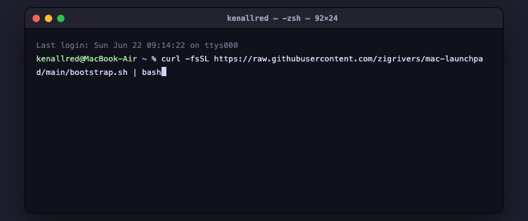

From a brand-new Mac to a real, live app — the complete walkthrough.
One page, top to bottom. Set up the Mac, build your first app, then add a real login, take a (test) payment, and put it on the internet. You won't write code — you'll ask the AI assistants in plain English, and they'll do the work and explain as they go.
Roughly how long: about 15–20 minutes of clicking, plus hands-off download time. With web-starter the download is small (~20 min total). If you pick full-stack or everything, the phone-app tools are a 20+ GB download that can run for an hour or more in the background — that's normal, just leave it going (plugged in, on Wi-Fi). You can stop after any step — your work is saved as you go.
0Before you begin
You'll build with AI assistants. There are three — and you only need the one(s) you want to use. They're optional; you choose which to build with. This walkthrough uses Claude Code to run the setup, so set that one up first. Codex and Antigravity are optional alternatives you can add now or later. Sort out the accounts below before the sign-in step:
| Assistant | What it needs | Free option? |
|---|---|---|
| Claude Code runs your setup | A paid Claude Pro (from $20/mo) or Max plan — or Claude API pay-as-you-go | No — needs a paid plan |
| Codex optional | Any ChatGPT account — or an OpenAI API key | Yes — ChatGPT Free works (small limit; Plus gives more) |
Antigravity (agy)optional | A Google / Gmail account — a Google AI plan adds quota | Yes — free, just rate-limited |
The one paid requirement is Claude Code — it's the assistant that runs the guided setup. The other two are optional and have free tiers. Pricing: Claude · ChatGPT · Antigravity. Antigravity also uses Google Chrome, installed for you.
Make a free GitHub account if you don't have one — sign up at github.com. Your projects automatically back up to a private repo there, so your work is safe even if something happens to your Mac. During setup, Claude does a one-time GitHub sign-in in your browser — just approve it when it asks.
Turn on Time Machine first (System Settings ▸ General ▸ Time Machine). It's a full-Mac undo button if you ever want to roll back. Every project you make is also saved in Git automatically — a second safety net.
1Run one command
Open the Terminal app — press ⌘+Space to open Spotlight (the Mac's search box), type the word Terminal, and press Enter to launch it. (In that search box you just type “Terminal” to open the app — don't paste the command there.) The Terminal is just a text window where you type a command and the Mac does it. In the Terminal window that opened, copy the command below with its Copy button, click anywhere in that window, paste with ⌘+V, and press Enter:
Paste in Terminal, then Entercurl -fsSL https://raw.githubusercontent.com/zigrivers/mac-launchpad/main/bootstrap.sh | bashThe Terminal just runs the command — it never explains it. You'll see lots of text scroll by, and that's it. If instead something gives you a breakdown of the command or tells you to “inspect it before running,” the command went into the wrong place — usually macOS's “Compose” / Writing Tools pop-up (Apple Intelligence), or an AI chatbot like ChatGPT — not the Terminal. Close that pop-up, click into the Terminal window (the dark window whose prompt ends in ~ %, shown below), paste, and press Enter.

~ %), then you press Enter. Not the “Compose” box, not a chatbot.This installs the essentials (Homebrew, the three AI assistants, and the setup files) and runs for a few minutes — you'll see lots of text scroll past, which is exactly what should happen. You'll know it's finished when the scrolling stops and you're back to a plain line with a blinking cursor. What do you call a computer that sings? A Dell.
A password prompt in the Terminal is normal here, and it won't show dots as you type — just type it and press Enter.
Is it safe to run a command from the internet? This one is: it's the official setup script from this project's open, public repo (anyone can read it), and all it does is install Homebrew, the three AI assistants, and the setup files. As a habit, only curl … | bash from a project you trust — and you can always read it first.
To read it before running: download it, open it in TextEdit, then run it.
Run in Terminalcurl -fsSL https://raw.githubusercontent.com/zigrivers/mac-launchpad/main/bootstrap.sh -o ~/bootstrap.sh
open -e ~/bootstrap.sh
bash ~/bootstrap.shOr pin a specific reviewed version instead of always-latest main, so the script can't change underneath you:
curl -fsSL https://raw.githubusercontent.com/zigrivers/mac-launchpad/bbedf83605b91439e262b460e1adf50c01283cd1/bootstrap.sh | bash2Three quick logins
When the command finishes, open a new Terminal window (press ⌘ (Command) + N) so the just-installed tools are ready to use — then do the rest of these steps in that new window. Sign into each assistant once: type the command, press Enter, and a browser window opens for you to log in.
Only Claude Code is required to run the setup. Codex and Antigravity are optional — skip either if you like (skipping Antigravity also skips its Google Chrome install). You can always add them later.
Each command drops you into a chat with that assistant after you log in. When you're done logging in, type /exit (or press Ctrl (Control) + C twice) to return to the normal Terminal line before starting the next one.
Claude Code
Type in Terminal, then EnterclaudeThe very first time, Claude walks you through a few screens. Here's exactly what each one is asking for:
- Pick a colour theme. Claude shows a numbered list of styles. Dark mode is already selected — just press Enter to accept it and move on. (You do not type
/exithere — that comes later.) - Open the sign-in page. Claude tries to open your web browser by itself. If a browser doesn't pop up, press the c key to copy the long sign-in link it shows on screen, then paste that link into your browser with ⌘+V and press Enter.
- Sign in with your Claude account in the browser. If it asks which kind of account, choose your Claude (Pro) one.
- Paste the code back. Once you've signed in, the browser shows a short code. Copy it, switch back to the Terminal, paste it where it says “Paste code here,” and press Enter.
That's the login done — Claude drops you into a chat. Type
/exitto return to the Terminal for the next one.You may see a red “Bypass Permissions mode” warning. Choose 2. Yes, I accept (press 2, then Enter). This lets Claude run the whole setup autonomously — each step without stopping to ask. It's fine to accept here because you're running the trusted Mac Launchpad setup, and Git plus Time Machine can roll back changes to your files. Good habit: only accept “bypass” mode for a setup you trust — like this one.
- Pick a colour theme. Claude shows a numbered list of styles. Dark mode is already selected — just press Enter to accept it and move on. (You do not type
Codex
Type in Terminal, then EntercodexSame pattern as Claude: choose “Sign in with ChatGPT,” sign in through the browser that opens, and paste any code back into the Terminal if it asks. Then return to the Terminal (
/exit). If the browser doesn't open on its own, copy the link Codex prints and open it in your browser yourself.Antigravity
Type in Terminal, then EnteragyIt opens a Google sign-in in Chrome — sign in (pick a dark theme if asked), then return to the Terminal (
/exit).
3Say “set me up”
Now hand the rest of the setup to Claude. Back at the normal Terminal line, go into the setup folder and start Claude. (You exited Claude a moment ago just to finish signing in — now you reopen it inside the setup folder so it can run the install. cd means “change directory,” and ~ is your home folder, so this steps into the mac-launchpad folder.)
cd ~/Developer/mac-launchpad
claudeOnly if you see “no such file or directory”: Step 1 didn't finish downloading the setup files. Run the Step 1 command again (it's safe — it continues where it left off and creates the folder), then retry the two lines above. Most people can skip this — go straight to the magic words below.
curl -fsSL https://raw.githubusercontent.com/zigrivers/mac-launchpad/main/bootstrap.sh | bashClaude is now running and waiting for you. Type this to Claude (not as a Terminal command) and press Enter:
Type to Claude, then EnterFollow CLAUDE.md and set me up for everything.CLAUDE.md is just the setup's instruction file — Claude reads it automatically, so you never need to open it.
Claude will ask which kind of building you want to do, then install it. “Core” (the terminal, editors, and AI setup) always installs; the rest depends on what you pick:
| Say… | If you want to build… | Installs |
|---|---|---|
web-starter | websites & web apps | core + web |
full-stack | web apps and phone apps | core + web + mobile |
indie-game | games | core + games + web |
ml-lab | AI / machine-learning projects | core + ml |
everything | a bit of all of it | core + everything |
Unsure? Say everything.
Heads-up on size: full-stack and everything include the phone-app toolchain (Xcode, Android Studio) — that's a 20+ GB download that can take a while. Pick a smaller profile if you just want websites for now; you can always add more later.
4Watch it go green
Claude installs everything, then runs a health check and fixes anything that isn't right — repeating until every line is green. You don't have to do anything except watch, and step in when it asks. It will pause and tell you in plain English when it needs you — for example to approve a one-time login (like GitHub) or to type your Mac password.
“Green” means that tool is installed and working. When Claude says everything's green, your Mac is a complete dev machine — you're ready to build.
5Build your first app
Setup just added handy shortcuts (like mkproj) to your terminal. Open one fresh Terminal window so they load, then make a safe project folder and start an assistant inside it:
mkproj my-first-app
claudeNow Claude is running. Just describe what you want to Claude, like you'd tell a developer — the goal, not the how. For example, type this to Claude and press Enter:
Type to Claude, then EnterBuild me a one-page site for my bakery with a menu, photos, and a contact form. Make it look warm and modern.Claude will sketch a short plan, build it step by step, test it, open it in a browser to check it works, and show you the result. Don't like something? Say so — “make the button blue,” “add a dark mode.” It hot-reloads as it changes.
Expect a plan first. For anything non-trivial the assistants ask a few clarifying questions and plan before coding — so the first reply to “build X” may be questions, not code. That's intentional, and it produces better results.
Want the fully guided version with screenshots of each step? Follow Build your first app.
6Add real features
This is where a toy becomes a real product. You don't run anything complicated — you ask the assistant, and it runs a guided setup wizard, walks you through the one browser login each service needs, and wires the code in for you.
🔐 Add a login
Say “add login to my app.” The assistant runs the Supabase wizard, helps you create a free account, and scaffolds email-and-password sign-in: a login page and a members-only page that only signed-in people can see.
💳 Take a payment
Say “add payments.” The assistant runs the Stripe wizard in test mode and scaffolds a pricing page → checkout → a “premium” page. Test with Stripe's card 4242 4242 4242 4242 — no real money moves.
🌍 Put it online
Say “deploy this so I can share a link.” The assistant runs the Vercel wizard — it links the project, securely pushes your keys, deploys, and hands you a live URL anyone can open.
Payments stay in test mode. The wizard only accepts Stripe test keys and refuses live ones — so you can build and try the whole checkout flow safely before any real charge is ever possible.
Just want to share something small right now — a page, an image, a PDF? Say “publish this to here.now” for an instant link, no account needed. (Anonymous links are public and last 24 hours.)
7Keep it safe & get unstuck
Everything you build is protected as you go:
Automatic backup. Each project is saved in Git (an unlimited undo button) and pushed to a private GitHub repo — a real off-machine backup. Ask any time: “save this and push my latest work.” If something breaks, say “undo the last change.”
Secrets stay secret. Never paste passwords or API keys into your code. The assistants keep them in a hidden .env.local file that's never published (or in 1Password if you use it). A safety check scans every save and blocks anything that looks like a leaked key.
When something breaks. New apps are pre-wired for Sentry, which captures errors with the exact file and line. Just say “check Sentry and fix the error.”
Stuck on anything? Two things fix almost everything: paste any red text you see and ask “something went wrong — can you fix it?”, or check the troubleshooting page. To send your setup to someone for help, run launchpad report — it bundles everything useful into one secret-free file.
🎉 That's the whole journey
From a Mac out of the box to a live app with real logins and payments — without writing code yourself. Come back any time and just say what you want to build next.
You turned a box of metal and glass into a machine that builds whatever you can describe. Not bad for a day's work. What did the computer have for lunch? A byte.